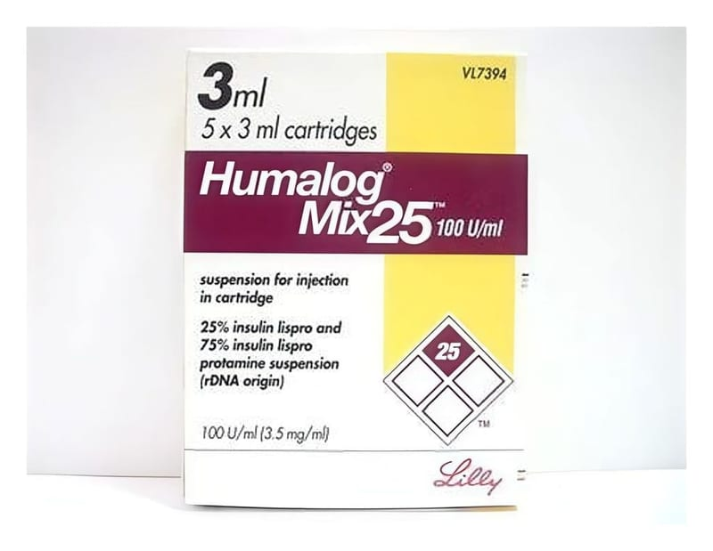

Humalog Mix 25 100 IU/ml 3 ml Süspansiyon İçeren Kartuş, 5 Adet

Ne için kullanılır
KT · Bölüm 1HUMALOG MIX50 beyaz, steril bir süspansiyondur.
HUMALOG MIX50 kutusunda 3 ml’lik 5 adet kartuş bulunur. HUMALOG MIX50 şeker hastalığını (diyabeti) tedavi etmek için kullanılan hazır bir süspansiyon karışımıdır. HUMALOG MIX50 içindeki % 50 insülin lispro suda çözünmüş haldedir ve bu ilaçtaki insülin molekülü kısmen değiştirilmiş olduğundan normal insan insülininden daha hızlı etki eder. HUMALOG MIX50 içindeki % 50 insülin lispro ise protamin sülfatla birlikte süspansiyon halde olduğundan etkisi daha uzundur.
Eğer pankreasınız kanınızdaki şeker düzeyinizi kontrol edecek kadar insülin üretmezse şeker hastalığı (diyabet) oluşur. HUMALOG MIX50 sizin kendi insülininizin yerine geçer ve uzun dönemde kan şekeri kontrolü için kullanılır. HUMALOG MIX50 çok hızlı etki gösterir ve insan insülinine göre etkisi daha uzundur. HUMALOG MIX50’yi normal olarak yemekten önceki 15 dakika içinde kullanmalısınız.
Doktorunuz size HUMALOG MIX50 ile birlikte uzun etkili bir insülin de kullanmanızı söyleyebilir. Her farklı tür insülin için ayrı kullanma talimatı bulunmaktadır. Doktorunuz size söylemeden insülininizi değiştirmeyiniz. İnsülininizi değiştirirseniz çok dikkatli olunuz.